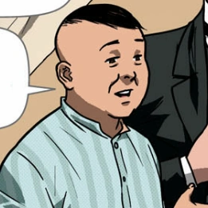
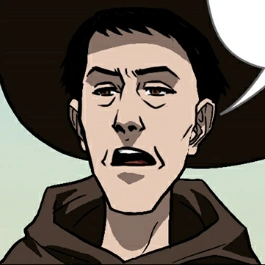
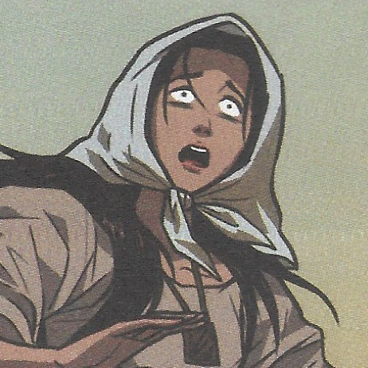
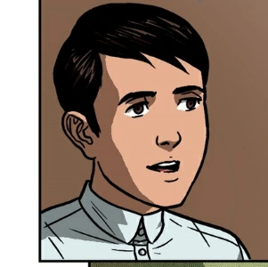

| Photo |
Name |
Description |
 |
Crisostomo Ibarra |
- Full Name: Juan Crisostomo Ibarra y Magsalin
- Main protagonist.
- A Spanish mestizo who studied for seven (7) years in Europe.
- He returned to his hometown after hearing of his father's passing (Don Rafael Ibarra) from Tenyente Gueverra.
- His educational background makes him very intelligent.
|
 |
Maria Clara |
- Fiance of Crisostomo Ibarra
- Daughter of Kapitan Tiago and Pia Alba
- Her mother, Pia Alba, died from child birth.
- She was raised by her aunt, Isabel Alba, ever since.
|
|  |
Kapitan Tiago |
- He is short, round-bodied, light-skinned, flat-nosed, had small eyes and looked younger than his age.
- He is one of the richest men in Binondo, having his own land in Laguna, Pampanga, and San Diego.
- He donates a lot of money to the church.
- He hosted a party for his arrival in his house, which is filled with lavish belongings.
|
 |
Padre Damaso |
- Other names/aliases: Padre Garrote
- He is a Fransiscan Priest.
- He complained about his tinola since he received the leg (considered the worst part) during Tiago's party.
- He doesn't want Ibarra and Clara to get married.
|
|  |
Padre Salvi |
- He is young and slim.
- He replaced Damaso as 'kura' for San Diego
- He doesn't hurt others (those who misbehave), he just fines them.
- He is happy whenever he sees a rosary or 'kalmen' as a souvenir.
|
|  |
Sisa |
- The mother of Basilio and Crispin
- She prepared dinner for their arrival, which was eaten by her husband, Pedro.
- She was in shock to see only Basilio return, who is wounded.
|
|  |
Basilio |
- The 9-year-old brother of Crispin
- He is the bigger and stronger brother of the two.
- He returned home to his mother wounded (since he was shot by a guard) without Crispin.
- He wanted to work for Crisostomo Ibarra instead of for the church.
|
 |
Crispin |
- The 7-year-old brother of Basilio
- He is the smaller and weaker brother of the two.
- He was accused of stealing 2 gold pieces from the church.
- Because of the accusation, he is constantly abused by the Sacristan mayor.
- His fate is unknown by the time his brother returned home.
|